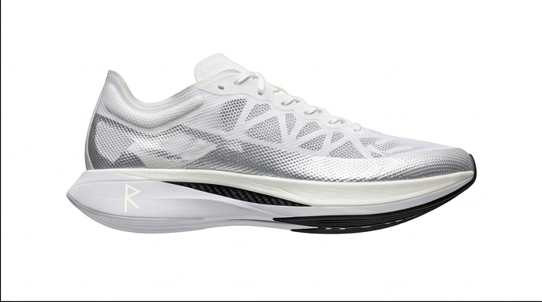

Tecnología y calidad
La misma calidad en cualquier parte.
Un par comprado en Ciudad de México rinde igual que uno comprado en Singapur o Berlín. Esa es la promesa de RUNE.
10★Calificación de calidad en las cuatro regiones
500Modelos y estilos disponibles
2Plantas propias: Norteamérica y Asia-Pacífico
1 sem.Entrega de reposición a minoristas
Calificación de calidad (S/Q) y datos operativos del Año 15.

01 02 0301Upper tejido de una sola piezaSin costuras en la zona de flexión. Transpirable y ligero.
02Mediasuela de doble densidadFirme en el talón, reactiva en el antepié.
03238 g en talla EU 42Un peso pensado para mantener el ritmo durante horas.
02
Cómo se construye
MaterialesSelección superiorMateriales de mayor desempeño en upper, mediasuela y suela.
ProcesoGestión de calidad totalControl en cada etapa de la línea, con mejoras continuas de planta.
Diseño500 modelos y estilosVariedad para cada uso sin rebajar el estándar de fabricación.
03
Dos plantas, un estándar
NA · Planta NorteaméricaDonde empezó todo.Abastece a Norteamérica y Latinoamérica.
AP · Planta Asia-PacíficoEscala con el mismo estándar.Abastece a Asia-Pacífico, Europa-África y Latinoamérica.
Set In Stone.
04 · Del taller a tu región
Un almacén en cada mercado.
Cada región tiene su centro de distribución. Los pedidos online salen desde allí y las tiendas reciben su reposición en una semana.